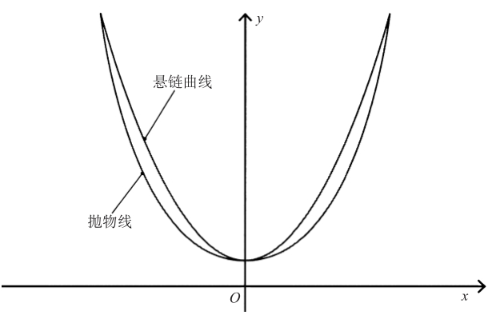

31 天鹅绒绳的数学问题
数学概念：悬链曲线

如果你要去密苏里州的圣路易斯，千万不要错过大拱门，那是一座高达192米的钢筋混凝土建筑。大拱门于1965年完工，一方面象征着圣路易斯曾经扮演的历史角色———西方殖民者进入北美开拓殖民地的大门；另一方面也算是对数学的致敬，因为它的形状近似一条悬链曲线，即两端固定的绳子在均匀引力作用下下垂形成的弧线（更准确地说，大拱门近似一条倒悬链曲线）。输电塔之间的电线和船的锚绳都是悬链曲线，用来隔离排队看电影或听音乐会的人群的天鹅绒警戒线也是悬链曲线。
悬链曲线看起来也像抛物线，但直到1691年（在数学史上，这算是一个晚近的日期），悬链曲线的方程式才被提出来，提出它的是三位大数学家———克里斯蒂安·海更斯、雅各布·贝努里和哥特菲尔德·莱布尼兹。
建筑中的悬链曲线
倒悬链曲线常出现在建筑中，增加了建筑的美感和优雅感，安东尼·高迪的米拉之家的阳台下和英国南约克郡谢菲尔德冬园温室的屋顶上都出现了悬链曲线。